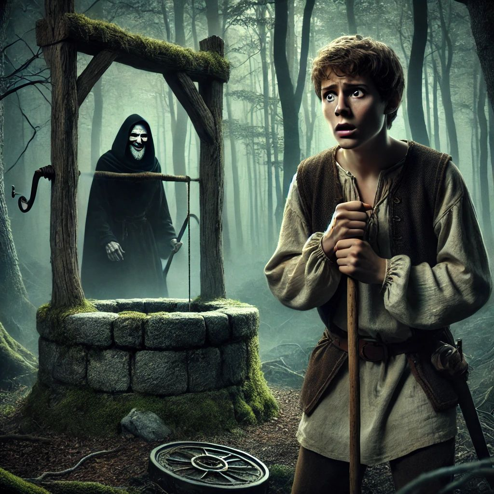

Întâlnirea și trădarea Spânului
„Azi am trăit una dintre cele mai grele zile din viața mea. De când am pornit la drum, știam că nu va fi ușor, dar niciodată nu mi-am imaginat că voi fi trădat atât de dur. Totul a început când l-am întâlnit pe Spân. La început, părea un om obișnuit, ba chiar prietenos. Ne-am împrietenit rapid, iar eu, fără să mă gândesc de două ori, i-am oferit încrederea mea. Poate că asta a fost cea mai mare greșeală.
Spânul părea să cunoască drumul mai bine decât mine și, la un moment dat, m-a invitat să ne oprim la o fântână pentru a bea apă. Am crezut că era doar un gest de prietenie. Însă, cum am băut din acea fântână, am simțit că ceva se schimbă. Ceva invizibil, dar extrem de puternic mă copleșea. Deodată, Spânul mi-a arătat adevărata sa față. Cu un zâmbet rece, plin de răutate, mi-a spus: 'De acum înainte, eu sunt stăpânul tău.'
În acel moment, am simțit cum îmi fuge pământul de sub picioare. Eram prins într-o capcană. Cum de am fost atât de naiv? Cum de nu am văzut ce fel de om era Spânul? M-am simțit umilit, trădat și lipsit de putere. Nu era doar o trădare fizică, ci și una emoțională. Mă încredințasem unui om care nu merita nici măcar să fie lângă mine. Am devenit sluga lui, obligat să-i urmez ordinele, fără să am nicio altă opțiune.
Cu toate acestea, nu mi-am pierdut speranța. Mă consolez cu gândul că fiecare pas făcut în această călătorie este o lecție, chiar și cele dureroase. Am învățat că nu trebuie să mă încred în oricine și că trebuie să-mi păstrez vigilența, indiferent cât de prietenoasă ar părea o persoană. În sufletul meu, simt că această încercare mă va întări și mă va ajuta să devin un om mai înțelept și mai puternic.
Lecția cea mai grea a zilei de azi? Nu oricine merită încrederea ta. Uneori, cei care par cei mai apropiați prieteni pot fi și cei care îți doresc răul. Dar încrederea în mine însumi este ceea ce mă va salva.”
